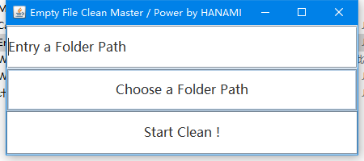

置顶动态
「Mine-Sweep」已入库！(✪ω✪)
2020/4/25
Repositories

扫雷
风格是想仿造Windows XP时期的预装的扫雷，一代经典了...
嘛，反正无聊写的小游戏；但也完成度还算不错，至少基本的功能是有了， 有在考虑往里面加一点主题元素之类的。
使用语言: Java 8
风格是想仿造Windows XP时期的预装的扫雷，一代经典了...
嘛，反正无聊写的小游戏；但也完成度还算不错，至少基本的功能是有了， 有在考虑往里面加一点主题元素之类的。
使用语言: Java 8
仓库列表
Empty Directory Clean Master
2020/1/31
Repositories

当时浏览资源管理器的时候发现空的文件夹实在是太多了。遂写了一个这东西。
功能很基础，就是清理一下空的文件夹。仅此而已。有设计GUI界面。
使用语言: Java 8
使用语言: Java 8
Internet Cafe Management System
2019/12/11
Repositories
大学学Java的课程的一个大作业。本来说是团队完成的...
我才不会说是队友拖到最后都没写完然后一个人全包了的...
哎呀，说出来了，牙——白——。
使用语言: Java 8
我才不会说是队友拖到最后都没写完然后一个人全包了的...
哎呀，说出来了，牙——白——。
使用语言: Java 8
Internet Cafe Management System ( C )
远古时期
Repositories
甚至是因为相同原因导致是我个人写的....
使用语言: C 11